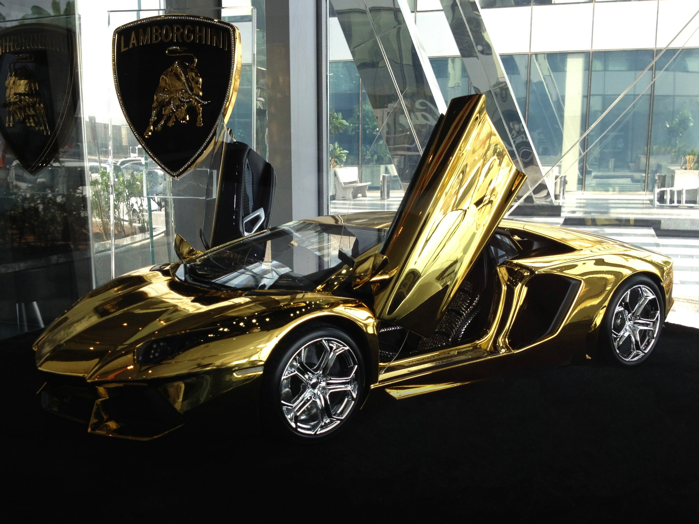
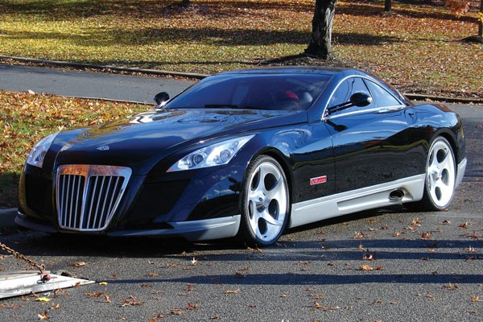
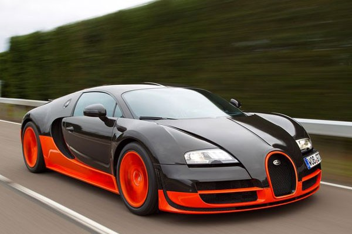

1. El auto mas castoso del mundo
2. meybach Exelero
Este deportivo tiene un motor V12 Turbocargado, es capaz de producir 700 caballos de fuerza. Es un auto elegante, lujoso y exclusivo con un valor de 7.8 millones de dólares.
3. Bugatti Veyron Supersport
Otro deportivo está caracterizado como uno de los mejores autos del mundo, por ser un auto de lujo, deportivo, diseño y tecnología. Es capaz de alcanzar 1.200 caballos de fuerza y acelerar de 0 a 100 km/h en 2.6 segundos, y tiene el valor de 7.8 millones de dólares.